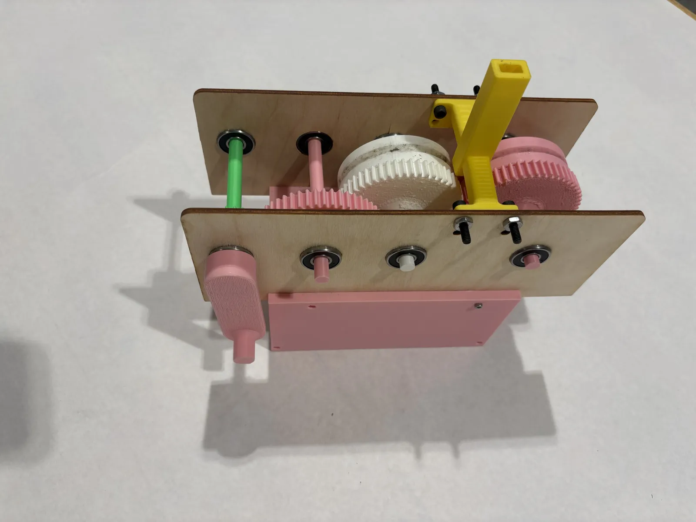
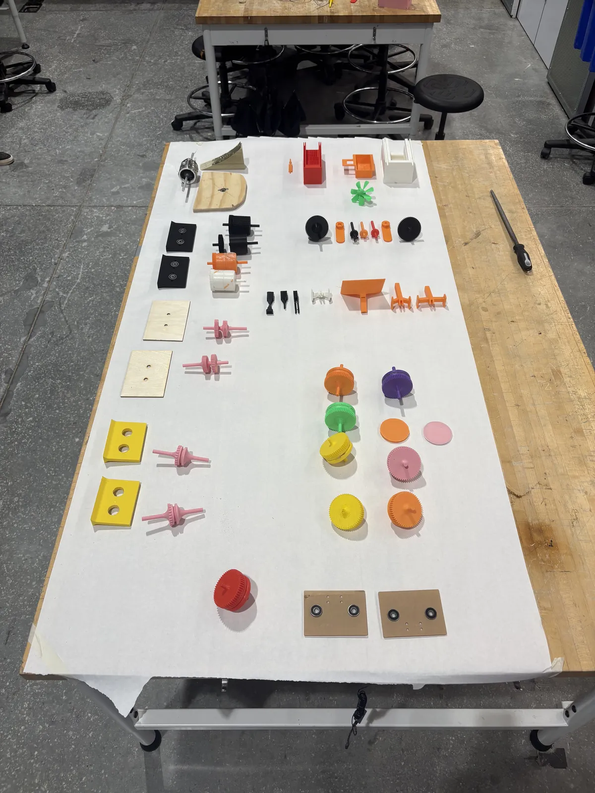

Seed Sheller
Roller-Based Sunflower Seed Sheller: Duke University
My Role
I designed and CAD'd the rollers, drive mechanism, and funnel for our 4-person team.


I changed the roller shape so the seeds would split along the seam instead of getting crushed.
Team results
- 41 intact kernels in 3 minutes
- Top score among 8 teams in our section on the yield-minus-waste metric
- 2nd among all first-year mechanical engineering teams